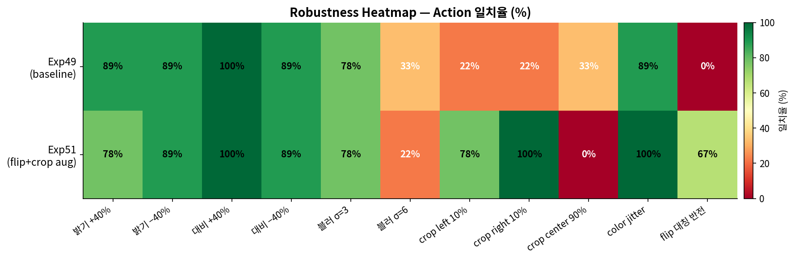

각 augmentation 조건에서 경로 타입별로 원본과 동일한 action을 예측하는 비율 (Exp51, crop augmentation 학습).

| 경로 | original | bright+40% | bright-40% | contrast+40% | contrast-40% | blur_sigma3 | blur_sigma6 | crop_left10% | crop_right10% | crop_center90% | color_jitter | flip_horizontal |
|---|---|---|---|---|---|---|---|---|---|---|---|---|
| 중앙→좌 | 100% | 0% | 100% | 100% | 100% | 100% | 0% | 100% | 100% | 0% | 100% | 0% |
| 중앙→우 | 100% | 100% | 100% | 100% | 100% | 100% | 100% | 100% | 100% | 0% | 100% | 100% |
| 중앙 직진 | 100% | 0% | 100% | 100% | 100% | 100% | 100% | 0% | 100% | 0% | 100% | 100% |
| 좌→좌 | 100% | 100% | 100% | 100% | 0% | 0% | 0% | 100% | 100% | 0% | 100% | 0% |
| 좌→우 | 100% | 100% | 100% | 100% | 100% | 100% | 0% | 100% | 100% | 0% | 100% | 0% |
| 좌 직진 | 100% | 100% | 0% | 100% | 100% | 0% | 0% | 100% | 100% | 0% | 100% | 0% |
| 우→좌 | 100% | 100% | 100% | 100% | 100% | 100% | 0% | 0% | 100% | 0% | 100% | 0% |
| 우→우 | 100% | 100% | 100% | 100% | 100% | 100% | 0% | 100% | 100% | 0% | 100% | 0% |
| 우 직진 | 100% | 100% | 100% | 100% | 100% | 100% | 0% | 100% | 100% | 0% | 100% | 0% |